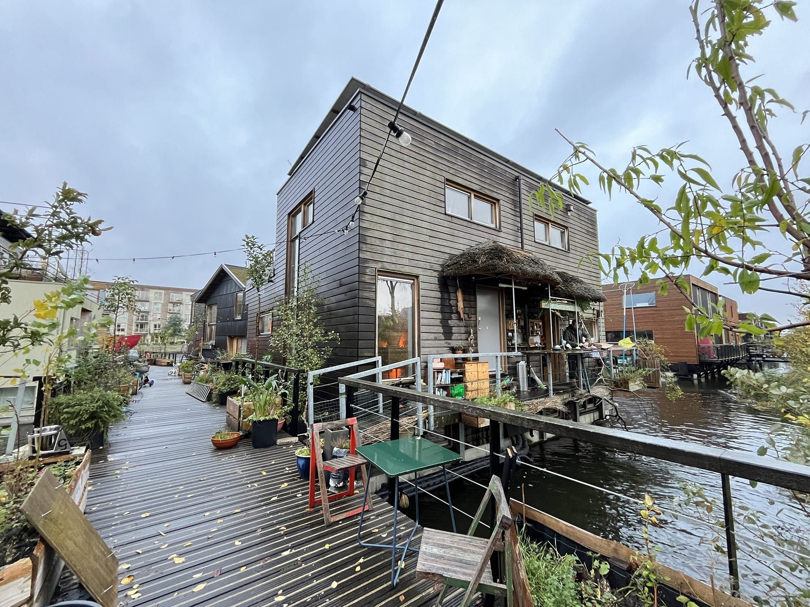

Joost & Sol over hun SchoonLeven

De twee onder één kap woning van Joost Janmaat
"Wij wonen hier op Schoonschip als sinds het begin, dat is 3/4 jaar. Als één van de eerste mensen hebben wij onze eigen woning gemaakt, niet zomaar een woning maar een twee onder één kap. Om duurzamer te willen leven kan alles minder, denk aan kleiner en simpeler wonen maar vooral lowtech. Trek een wollen trui aan in plaats van de vloerverwarming aanzetten."
"Luxe is de duivel voor duurzaam wonen."
- Joost Janmaat, Ecoloog
Sol en zijn heitje voor karweitje
"Mijn naam is Sol en ik ben 10 jaar oud. Ik woon naast Joost. Het leuke van Schoonschip vind ik dat het hier super gezellig is, vooral in de zomer dan kunnen wij met z'n alle zwemmen in het water. Verder scheid ik het afval af en toe of ruim ik afval op die op de steigers liggen. Met mijn vrienden naam en naam doe ik ook vaak heitje voor karweitje. Wij doen dan klusjes zoals glas wegbrengen, statiegeld opleveren en papier/karton wegbrengen."